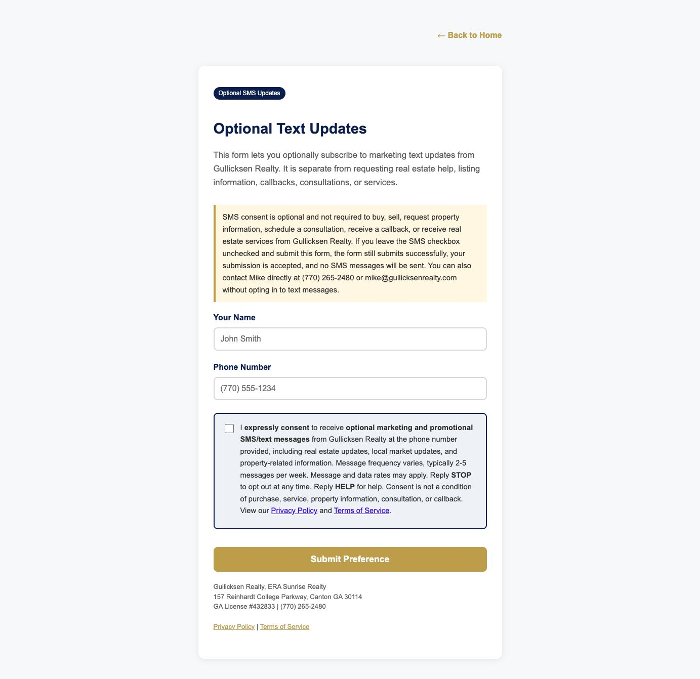
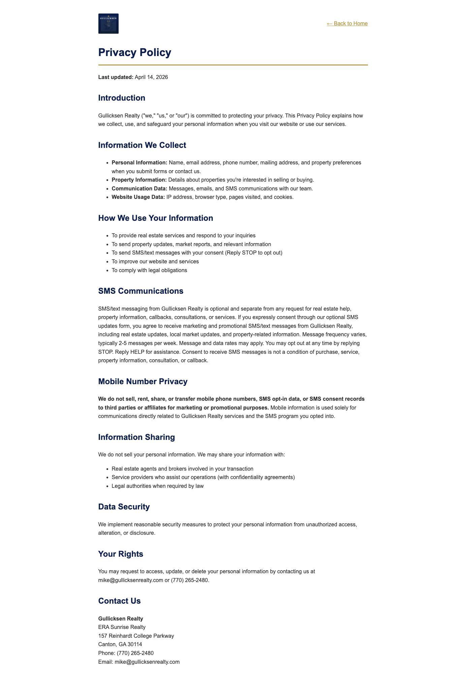
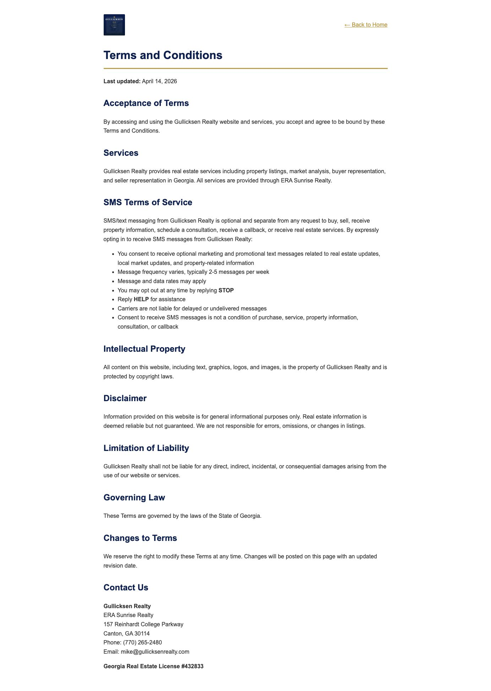

Gullicksen Realty SMS Opt-In Proof
Prepared for Twilio A2P 10DLC campaign review. This page documents how consumers voluntarily opt in to optional SMS updates from Gullicksen Realty.
Reviewer Summary
- Opt-in URL: https://gullicksenrealty.com/sms-optin.html
- Privacy Policy: https://gullicksenrealty.com/privacy.html
- Terms of Service: https://gullicksenrealty.com/terms.html
- The SMS checkbox is separate, unchecked by default, and not required.
- If the consumer leaves the checkbox unchecked and submits, the form still submits successfully and no SMS messages are sent.
- Only checked-box opt-ins receive optional SMS marketing updates.
- Gullicksen Realty does not text BatchData skip-traced numbers, MLS expired/withdrawn owners, cold CRM leads, DNC contacts, or anyone without documented SMS opt-in.
Step-by-Step Opt-In Flow
- Consumer visits
https://gullicksenrealty.com/sms-optin.html. - The page states SMS updates are optional and separate from buying, selling, property information, callbacks, consultations, or real estate services.
- Consumer enters name and phone number.
- Consumer sees a separate SMS consent checkbox. It is unchecked by default and is not required.
- If unchecked, the form still submits successfully, non-SMS service may continue by phone or email, and no SMS messages are sent.
- If checked, Gullicksen Realty records the opt-in source URL, timestamp, phone number, and consent language in the CRM.
Opt-In Page Screenshot
This screenshot shows the live opt-in page with the optional SMS notice and separate unchecked checkbox.

Privacy Policy Screenshot
This screenshot shows the SMS privacy language and mobile number privacy language.

Terms Screenshot
This screenshot shows the SMS terms, STOP/HELP instructions, frequency, and consent-not-required language.
